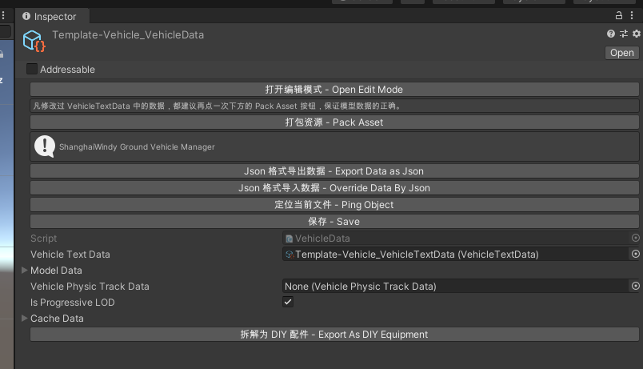
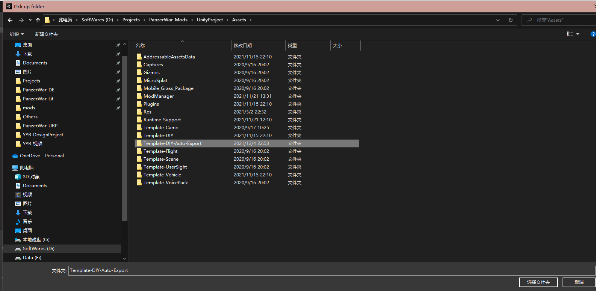
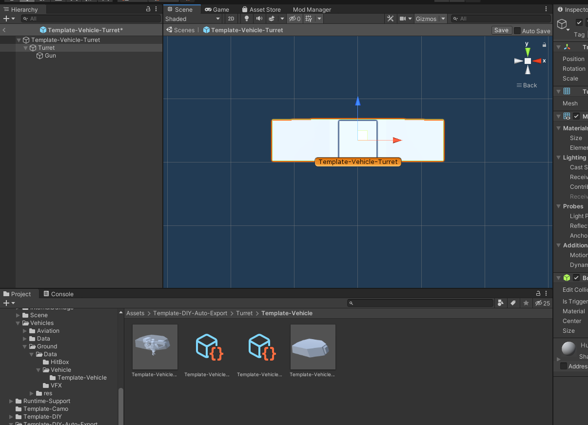
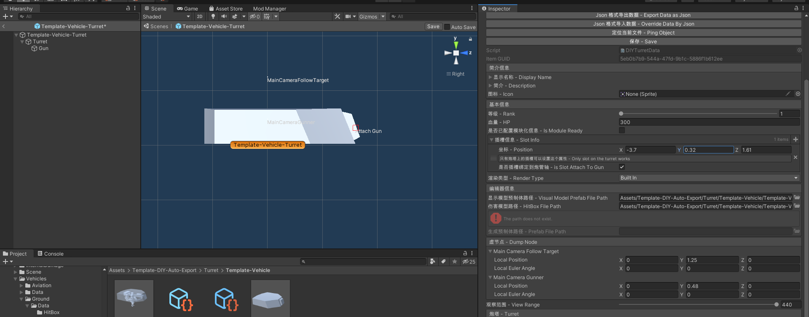

11. Covert To DIY Equipment一键转为 DIY 配件
1. DIY Equipment DIY 配件
DIY equipments are in the workshop of Panzer War : DE. DIY equipments are consist of Hull,Turret,Gun and other equipments.
DIY 配件为决定版的坦克工坊相关内容，可创建自定义车体，炮塔，炮管和一些其他配件。
2. Auto Convert 一键转换

Click Export As DIY Equipment button.
点击 拆解为 DIY 配件 按钮

Select a folder in your project. Your vehicle data will create DIY Equipment.
选择一个位于你项目内的文件夹。 你的 Vehicle Data 数据将生成 DIY 配件信息。
3. Adjust 调整

Adjust the postion of the **model **and hitbox. Make sure the pivot of your model in the origin (0,0,0).
调整你的模型和伤害模型的位置，确保他们的轴位于坐标原点 （0，0，0）

Adjust the position of Slot Info and Dump Node. Make sure they are in the proper position.
调整插槽信息和虚节点的位置，确保他们位于合适的位置。